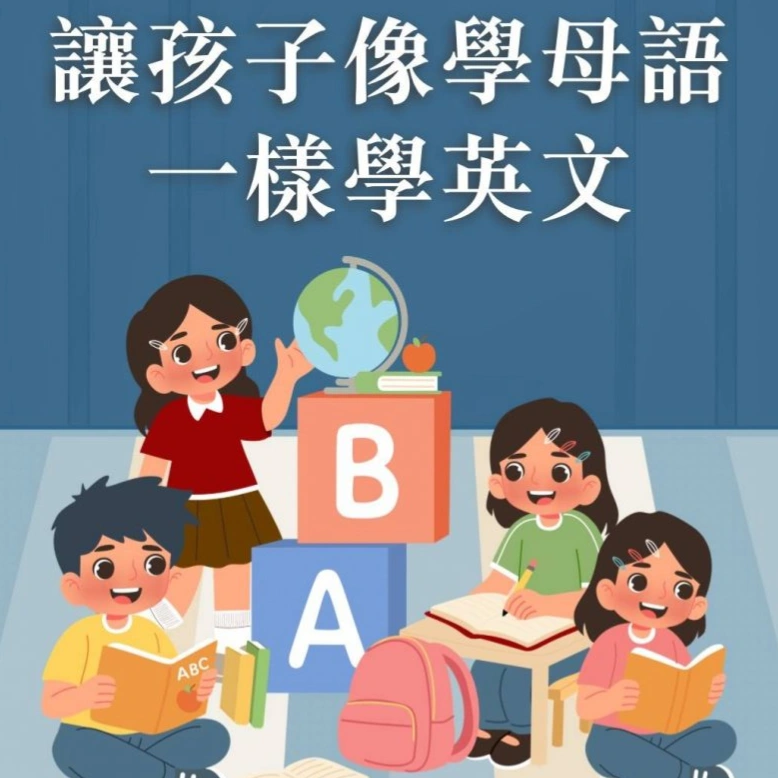

語言學習不僅僅是學會聽說讀寫，更是一種在全方位學習環境中探索自我、激發創造力的過程。
透過多樣化的教材、加入「數學及科學」，運用趣味遊戲及情境模擬，孩子不僅能夠自信表達、勇於溝通。
高單位的英語學習時數，創造全英語浸潤環境，大量的英語溝通，提升語言使用的流暢度。
重視主動參與的整合式學習法，相關的 projects 活動練習，建立孩子學習動機和主動找出答案的成就感。
「微小的開端，為孩子累積美好未來的基礎。
從這裡啟程，邁向更廣闊的全球化未來。」

複製國外小學情境 培育未來 6 大關鍵能力
全程外籍教師英語教學，培育優異聽說讀寫能力
國際小學科學、數學課程，讓孩子轉動思考，探索未知答案
應用英語到音樂、美術等多元課程活動，創造多采生活
原文故事讀本養成閱讀好習慣，引導討論培養膽識
戶外團體活動，建構人際智能與團隊精神
每月訂定品格主題，以故事、活動等方式引導建立良善品格
打造全方位的英語學習生態，結合美式教育精神與在地學業需求，讓孩子在快樂中成長，在專注中學習。
課程仿效國外國小的教學安排，涵蓋聽說讀寫及藝能科目等多元領域。讓英語不僅是第二語言，更成為日常生活與學習的工具。
以生動有趣的方式，幫助孩子輕鬆掌握基礎技能。透過實作活動激發創意思維，學會專注與自由表達，提升自信心。
聘請經驗豐富的外籍教師提供母語式教學，並與中籍教師協同輔助，打造雙重教學支持，快速提升英語能力。
將英語學習與學業進度結合，每天提供專屬作業時間，與家長共同關注進度，輔助語言能力和學業表現全面成長。
課堂內設有專屬閱讀時間，鼓勵養成閱讀習慣，並延伸至課後的親子共讀。增進親子互動，幫助擴展詞彙、激發學習興趣。
每週一至週五 12:40－17:40 (週二 16:10－17:40)
| 時間 | 週一 | 週二 | 週三 | 週四 | 週五 |
|---|---|---|---|---|---|
| 12:40-13:15 午休 | 午後小憩 Nap | - | 午後小憩 Nap | 午後小憩 Nap | 午後小憩 Nap |
| 13:20-14:00 第五節 | 外師聽力/口說 Listening/Speaking |
- | 外師思辨性思考 Critical Thinking |
外師聽力/口說 Listening/Speaking |
外師思辨性思考 Critical Thinking |
| 14:10-14:50 第六節 | 外師發音 Phonics | - | 外師數學 Math | 外師發音 Phonics | 外師數學 Math |
| 15:10-15:50 第七節 | 中師時間(閱讀寫作) | - | 中師時間(閱讀寫作) | 中師時間(閱讀寫作) | 中師時間(閱讀寫作) |
| 16:00-17:40 第八節 | 國小作業時間 | 國小作業時間 | 國小作業時間 | 國小作業時間 | 國小作業時間 |
| 17:40-18:00 結束 | 放學時光 (最遲請於18:00前接回) |
放學時光 | 放學時光 | 放學時光 | 放學時光 |
備註：社口國小國際教育課後班有權依教學需求變更課程安排。
歡迎加入社口國小ESL國際教育課後班，請詳細閱讀以下招生規定與時程。